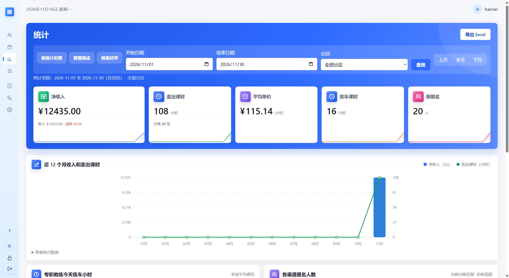
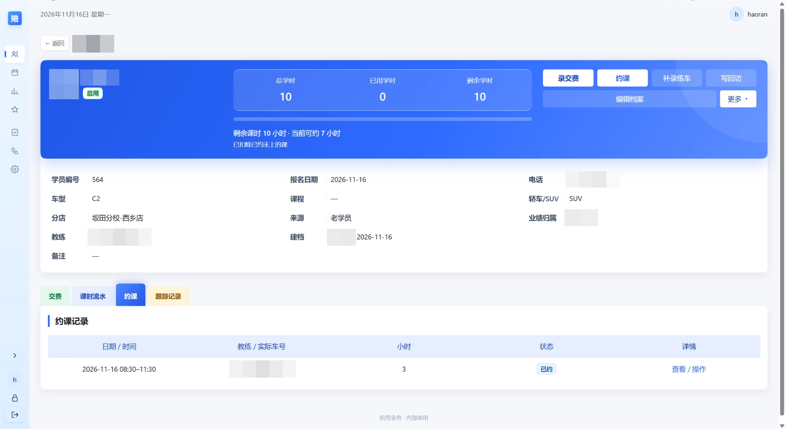
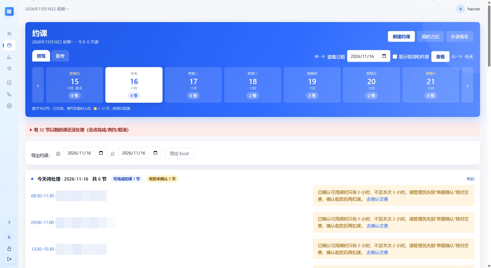
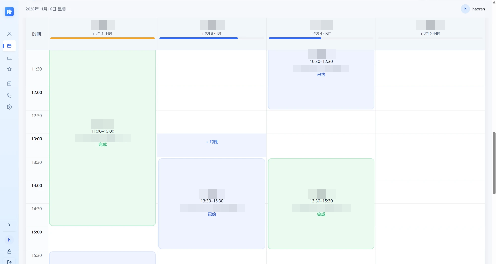
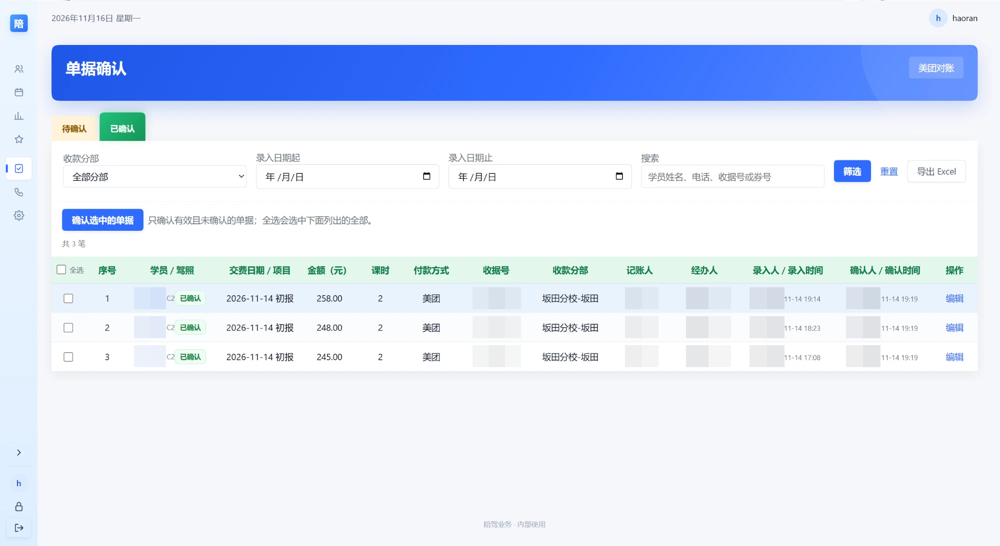
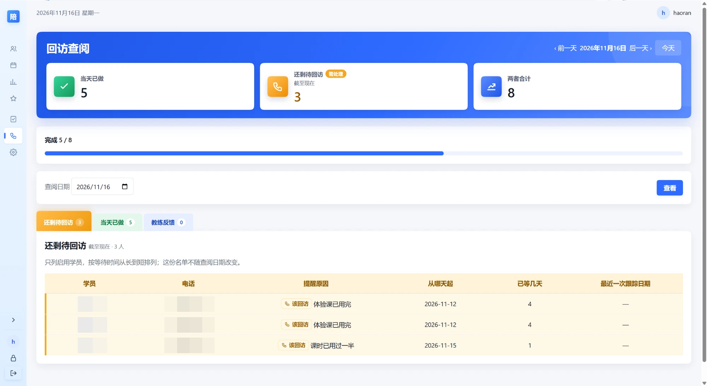
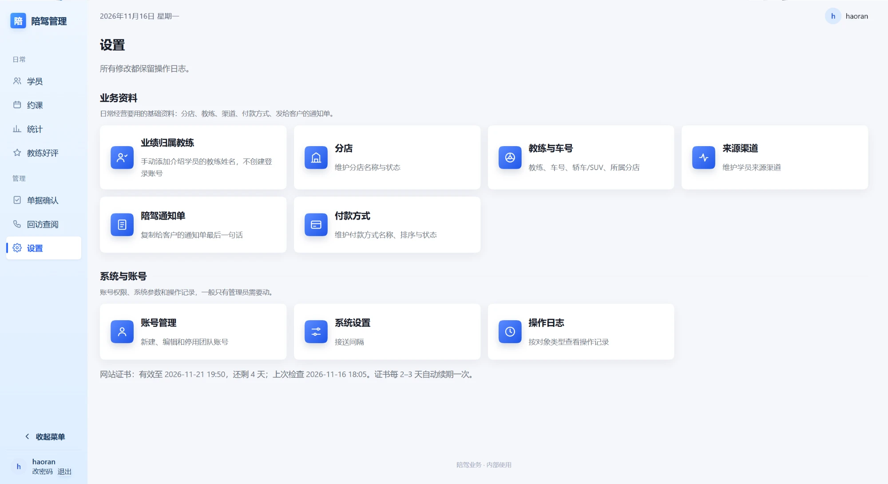
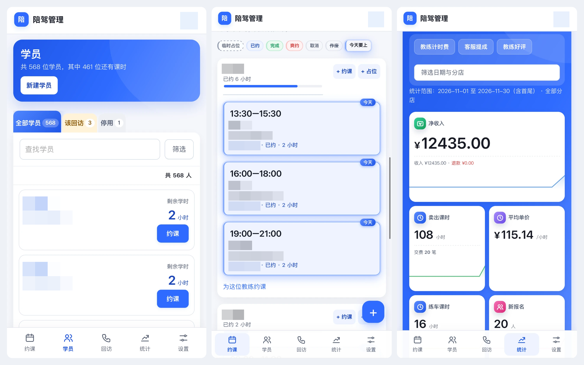
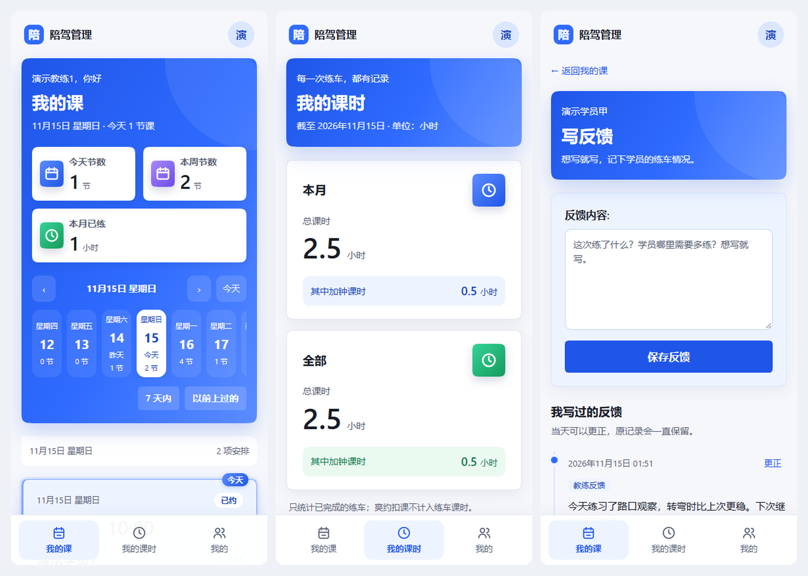

问题
迁移 547 名老学员时发现重复编号、手改余额和无记录加钟，需核对剩余课时。
原因
旧表无课时流水，手改余额无法还原每笔交费、加钟和扣课。
改法
我定下“不以旧余额覆盖真实扣课记录”的原则，逐条核差、批准更正清单后受控重导：
- 7 人追加 30 小时更正。
- 3 人补建结转 22 小时。
- 2 人关联旧编号。
核对报告确认后再部署。
改完以后
上线前后 19 张业务表逐字段不变，余额与流水 0 不一致；4 处余额差异均有对应记录。

陪驾业务原以人工方式运转，约课登记在 Excel 表格中，格式不统一；剩余课时、收入和各教练课量依赖人工计算，效率低且易出错。找人先查序号，录课要切换多个表。
两名客服同时操作，可能重复约同车同时段；接送间隔靠人记，表格不查冲突。
交费、加钟、退款散在各表；旧资料有重复编号、手改余额，需逐条核对。
供几人使用的内部系统，分员工端和教练端。业务从建档到统计分五步。
金额按“分”、课时按“半小时”存整数，不用浮点数。流水只增不改，录错须作废或更正并写原因；业务数据不真删。所有写操作记录操作人、时间、修改内容和原值。
员工可建档、录交费、约课和取消。完成扣课、补录练车、扣课爽约仅管理员可操作；教练只看自己的课与课时。登录、权限、表单、迁移使用 Django 自带功能。
547 名老学员迁入并逐条核对 · 1,409 条自动化测试 · 阿里云 HTTPS 与每日加密备份









1 / 10 · 学员列表
迁移 547 名老学员时发现重复编号、手改余额和无记录加钟，需核对剩余课时。
旧表无课时流水，手改余额无法还原每笔交费、加钟和扣课。
我定下“不以旧余额覆盖真实扣课记录”的原则，逐条核差、批准更正清单后受控重导：
核对报告确认后再部署。
上线前后 19 张业务表逐字段不变，余额与流水 0 不一致；4 处余额差异均有对应记录。
已部署阿里云 2 核 2G Ubuntu，使用 HTTPS。Nginx + gunicorn，Let's Encrypt 证书自动续期，后台提醒到期。每天凌晨加密备份保留 14 天，本机电脑开机时自动同步。